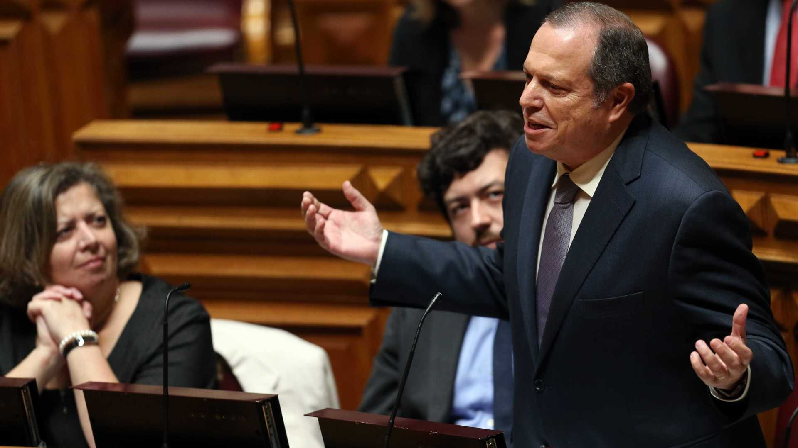

O líder parlamentar do PS criticou hoje o "leilão" de propostas de alteração ao Orçamento, considerando que a direita anda "de cabeça perdida à cabeçada", enquanto Bloco e PCP revelam "ansiedade pré-eleitoral" e "impreparação" para funções governativas.
Carlos César fez estas referências sobre a atuação do PSD, CDS-PP, Bloco de Esquerda e PCP no debate do Orçamento do Estado para 2019 na sessão de encerramento das Jornadas Parlamentares do PS, que decorreram em Portimão.
Na série de avisos dirigidos às outras forças políticas, o presidente do Grupo Parlamentar do PS começou por frisar que os socialistas têm de recusar "ímpetos menos razoáveis da parte daqueles que tudo querem, sem quererem entender que tudo não pode ser conseguido ao mesmo tempo, correndo-se o risco de comprometer a maior parte do que foi já alcançado".
"A discussão agora em curso do Orçamento para 2019, com os milhares de milhões de propostas de alteração - num leilão em que a direita é euforicamente perdulária e num exercício quase patológico -, mostra bem como todo o cuidado é pouco. Não só porque a direita perdeu a cabeça e anda para aí às pequenas e médias cabeçadas, mas também outros, porque já acham que as propostas da direita são como as propostas da esquerda", disse.
Em relação ao Bloco de Esquerda e PCP, Carlos César observou ainda: "Parecem tomados por uma ansiedade pré-eleitoral de difícil contabilização com o sentido de responsabilidade que os portugueses estimam que a esquerda deve preservar".
"Os portugueses percebem o que se passa: Uns [PSD e CDS-PP], de tanto tergiversarem e de se oporem a si próprios, pouco servem o país como oposição ao Governo; outros [Bloco e PCP], de tanto negligenciarem o cumprimento das normas a que o país está obrigado, revelam-se pouco preparados para entender a governação num período tão sensível da vida nacional e europeia", declarou.
Segundo Carlos César, compete ao PS "manter o diálogo particularmente à esquerda", mas compete-lhe, "sobretudo, manter o rumo".
Na parte inicial do seu discurso, Carlos César deixou duas saudações, com a primeira a ser dirigida ao líder do partido e primeiro-ministro, António Costa, considerando que transmitiu no sábado, na abertura das Jornadas Parlamentares, uma mensagem de clara solidariedade em relação à bancada socialista, "às suas iniciativas e propostas".
"Os deputados do PS "são intérpretes dos seus eleitores e não porta-vozes do Governo", acentuou mais à frente o presidente do Grupo Parlamentar socialista.
A segunda mensagem "especial" foi dirigida por Carlos César ao secretário de Estado dos Assuntos Parlamentares, Pedro Nuno Santos, que estava sentado na mesa da sessão ao lado da secretária-geral adjunta do PS, Ana Catarina Mendes.
O líder da bancada socialista destacou então o papel político do secretário de Estado dos Assuntos Parlamentares na "estabilização" da atual solução governativa".
"Pedro Nuno Santos é nosso convidado permanente", frisou o líder parlamentar socialista.